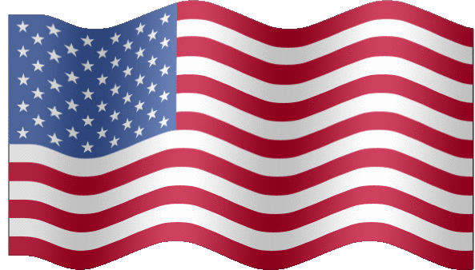

 My gear
A lot of my fans ask my what gear I use, so I thought I'd give you a little preview.
Nunchaku
My primary nunchaku for training and teaching are the ProForce 12" Practice/Demo Ultra Foam Octagon Nunchaku - Black . The balance on these chucks is exceptional for the price and the octagonal sides really help your grip when you work up a major sweat after a long session.
. The balance on these chucks is exceptional for the price and the octagonal sides really help your grip when you work up a major sweat after a long session.
Protective Gear
For any new chuckers out there, I'd suggest where a nice thick, long sleeve shirt when practicing. You're going to end up with bruises, so less skin exposure is good. Once you get more advance like me, you'll be confident enough to chuck in just about anything. I'm partial to my favorite TapouT shirt, but any shirt (or no shirt) will do.
That's the basics, but I'll be adding more to this section in the future.
Home
Hits: